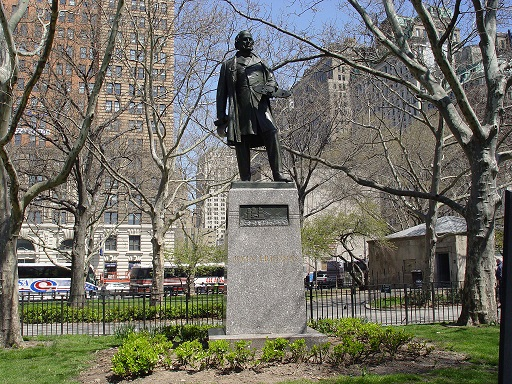
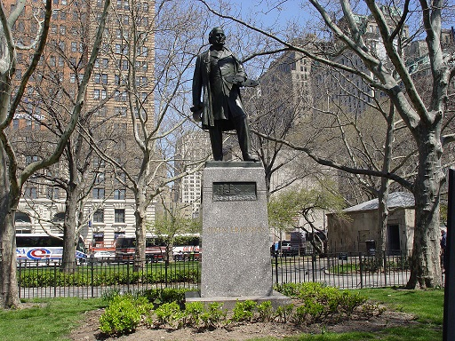

New York
Welcome to New York
Upstate New York – anywhere outside the city, essentially – and downstate share virtually nothing but a governor and dysfunctional legislature in the capital, Albany. This incongruity produces political gridlock, but it's a blessing for those who cherish a hike up a mountaintop as much as a bar crawl around the Lower East Side. Upstate is defined largely by its inland waterways. The Hudson River heads straight north from NYC, like an escape route. From Albany, the 524-mile Erie Canal cuts due west to Lake Erie, by the world-famous Niagara Falls and Buffalo, a lively city despite its epic winters. And the St Lawrence River forms the border with Canada in the under-the-radar Thousand Islands area. Another patch of water is the Finger Lakes region, and the college town of Ithaca, known for its wines. Add in the rugged backcountry of the Adirondack mountains and the lush farms of the Catskills, plus miles and miles of sandy beaches along Long Island, it's easy to understand why people leave the city, never to return.
Top experiences
-
Central Park
One of the world’s most renowned green spaces, Central Park spreads across 843 acres of rolling meadows, boulder-studded outcroppings, elm-lined walkways, manicured European-style gardens, a lake and a reservoir — not to mention an outdoor theater, a memorial to John Lennon, an idyllic waterside eatery (the Loeb Boathouse) and one very famous statue of Alice in Wonderland. Highlights include Sheep Meadow, where thousands of people lounge and play on warm days; Central Park Zoo; and the forest-like paths of the Ramble.
-
Metropolitan Museum of Art
This sprawling encyclopedic museum, founded in 1870, houses one of the largest art collections in the world. Its permanent collection has more than two million individual objects, from Egyptian temples to American paintings. Known colloquially as ‘The Met,’ the museum attracts over six million visitors a year to its 17 acres of galleries – making it the largest single-site attraction in New York City. In other words, plan on spending some time here – it is B-I-G.
-
Lincoln Center
This stark arrangement of gleaming Modernist temples house some of Manhattan’s most important performance companies: the New York Philharmonic, the New York City Ballet and the iconic Metropolitan Opera House, whose lobby's interior walls are dressed with brightly saturated murals by painter Marc Chagall. Various other venues are tucked in and around the 16-acre campus, including a theater, two film-screening centers and the renowned Juilliard School. Built in the 1960s, this imposing camp
-
Grand Central Terminal
Completed in 1913, Grand Central Terminal – more commonly, if technically incorrectly, called Grand Central Station – is one of New York’s beaux-arts beauties. Adorned with Tennessee-marble floors and Italian-marble ticket counters, its glorious main concourse is capped by a vaulted ceiling depicting the constellations, designed by French painter Paul César Helleu. When commuters complained that the sky is backwards – painted as if looking down from above, not up – it was asserted as intentional (possibly to avoid having to admit an error).
-
Ellis Island
Ellis Island is America's most famous and historically important gateway. Between 1892 and 1924, over 12 million immigrants passed through this processing station, their dreams in tow. Today, its Immigration Museum delivers a poignant tribute to the immigrant experience, featuring narratives from historians, the immigrants themselves and other sources; the tour brings to life the museum’s hefty collection of personal objects, official documents, photographs and film footage. Always purchase your tickets online (www.statuecruises.com) to avoid the soul-crushingly long queues.
-
Chrysler Building
Designed by William Van Alen in 1930, the 77-floor Chrysler Building is prime-time architecture: a fusion of Moderne and Gothic aesthetics, adorned with steel eagles and topped by a spire that screams Bride of Frankenstein. The building was constructed as the headquarters for Walter P Chrysler and his automobile empire; unable to compete on the production line with bigger rivals Ford and General Motors, Chrysler trumped them on the skyline, and with one of Gotham's most beautiful lobbies.
-
Brooklyn Bridge
A New York icon, the Brooklyn Bridge, which connects Brooklyn and Manhattan, was the world’s first steel suspension bridge. Indeed, when it opened in 1883, the 1596ft span between its two support towers was the longest in history. Although its construction was fraught with disaster, the bridge became a magnificent example of urban design, inspiring poets, writers and painters. Its pedestrian walkway delivers soul-stirring views of lower Manhattan, the East River and the rapidly developing Brooklyn waterfront.
-
Rockefeller Center
This 22-acre 'city within a city' debuted at the height of the Great Depression, with developer John D Rockefeller Jr footing the $100 million price tag. Taking nine years to build, it was America's first multi-use retail, entertainment and office space – a sprawl of 19 buildings (14 of which are the original Moderne structures). The center was declared a National Landmark in 1987. Highlights include the Top of the Rock observation deck and NBC Studio Tours.
-
Empire State Building
This limestone classic was built in just 410 days – using seven million hours of labor during the Great Depression – and the view from its 86th-floor outdoor deck and 102nd-floor indoor deck are heavenly. Alas, the queues to the top are notorious. Getting here very early or very late will help you avoid delays – as will buying your tickets ahead of time online, where the extra $2 convenience fee is well worth the hassle it will save you.
-
National September 11
Just beyond the reflective pools of the September 11 Memorial is the National September 11 Memorial Museum. Architecturally intriguing and deeply moving, its collection of artifacts, video, photographs and audio create a dignified, reflective exploration of the day of the tragedy, the events that preceded it (including the WTC car-bombing of 1993), and the stories of grief, resilience and hope that followed.
-
Statue of Liberty
Reserve your tickets online well in advance (up to six months ahead) to access Lady Liberty’s crown for breathtaking city and harbor views. If you miss out on crown tickets, you may have better luck with pedestal tickets, which also offers commanding views. If you don't score either, don't fret: all ferry tickets to Liberty Island offer basic access to the grounds, including guided ranger tours or self-guided audio tours. Book all tickets online (www.statuecruises.com) to avoid long queues.
-
One World Trade Center
Home to One World Observatory – New York's highest observation deck – the 104-floor One World Trade Center is architect David M Childs' redesign of Daniel Libeskind's original 2002 concept. Not only the loftiest building in America, this tapered giant is currently the tallest building in the Western Hemisphere, not to mention the fourth tallest in the world by pinnacle height.
Discover the beauty of New York


 
